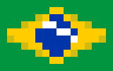
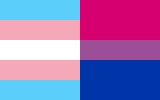

Oi! Meu nome é Erica, alguns dos meus outros vulgos são Eri, Erca, lepolerica, ou até mesmo Erre. Atualmente, eu tenho 20 anos e estou localizada no Brasil.
Talentos
Eu não sou tãããaao talentosa com códigos, bom, pelo menos por enquanto :P mas eu conheço algumas linguagens como C, Java Script e Python. Tenho alguns outros talentos, esses sendo artísticos, como ilustração, pixel art e Blender.
Interesses
Eu sou fascinada por lógica de programação, e tenho intenção de ser primariamente uma desenvolvedora back-end, mesmo que, atualmente, eu seja mais apta a ser front-end.
Recentemente senti uma fagulha de interesse na criação de jogos ser acessa, por presenciar o projeto de gamejam feito por alguns amigos. Isso me inspirou a criar algumas ideias e ir atrás de como ingressar no ramo de game development, entretanto por agora não possuo projetos.
Sou uma grandessísima fã de jogos, e é um pouco difícil de apontar todos os jogos que eu gosto, então irei apresentar alguns títulos que eu tenho muito carinho como por exemplo Deltarune, Guilty Gear Strive, Monster Hunter: World e Hyper Light Drifter (meu jogo favorito!) E esses são meus gêneros favoritos: Roguelikes, Soulslikes, Jogos de luta, Sobrevivência, Metroidvanias, Tower Defenses e MMORPGs.
Uma coisa que muuuitos não sabem sobre mim é que sou fascinada por moda. Já tive diversos projetos e designs, mas o que me impede de conquistar um senso de estilo próprio é a falta de dinheiro pra comprar roupas, que, modéstia à parte me deixariam muito fofa. Algumas estéticas que me apetecem: [Punk], [Goblincore], [Autumn], [Grunge].
Música é uma coisa essencial na minha vida, alguns dos meus artistas favoritos são Caravan Palace, Gorillaz, Joji, My Chemical Romance, Panic! At the Disco e Terno Rei. E pra facilitar a minha vida, eu decidi fazer uma chart com meus estilos favoritos!
(Eu ainda posso gostar de uma música, mesmo não estando nessa lista.)
Erica
(ela/dela)


Oi! Meu nome é Erica, alguns dos meus outros vulgos são Eri, Erca, lepolerica, ou até mesmo
Erre. Atualmente, eu tenho 20 anos e estou localizada no Brasil.Talentos
Eu não sou tãããaao talentosa com códigos, bom, pelo menos por enquanto :P mas eu conheço algumas linguagens como C, Java Script e Python. Tenho alguns outros talentos, esses sendo artísticos, como ilustração, pixel art e Blender.
Interesses
Eu sou fascinada por lógica de programação, e tenho intenção de ser primariamente uma desenvolvedora back-end, mesmo que, atualmente, eu seja mais apta a ser front-end.
Recentemente senti uma fagulha de interesse na criação de jogos ser acessa, por presenciar o projeto de gamejam feito por alguns amigos. Isso me inspirou a criar algumas ideias e ir atrás de como ingressar no ramo de game development, entretanto por agora não possuo projetos.
Sou uma grandessísima fã de jogos, e é um pouco difícil de apontar todos os jogos que eu gosto, então irei apresentar alguns títulos que eu tenho muito carinho como por exemplo Deltarune, Guilty Gear Strive, Monster Hunter: World e Hyper Light Drifter (meu jogo favorito!) E esses são meus gêneros favoritos: Roguelikes, Soulslikes, Jogos de luta, Sobrevivência, Metroidvanias, Tower Defenses e MMORPGs.
Uma coisa que muuuitos não sabem sobre mim é que sou fascinada por moda. Já tive diversos projetos e designs, mas o que me impede de conquistar um senso de estilo próprio é a falta de dinheiro pra comprar roupas, que, modéstia à parte me deixariam muito fofa. Algumas estéticas que me apetecem: [Punk], [Goblincore], [Autumn], [Grunge].
Música é uma coisa essencial na minha vida, alguns dos meus artistas favoritos são Caravan Palace, Gorillaz, Joji, My Chemical Romance, Panic! At the Disco e Terno Rei. E pra facilitar a minha vida, eu decidi fazer uma chart com meus estilos favoritos!
(Eu ainda posso gostar de uma música, mesmo não estando nessa lista.)